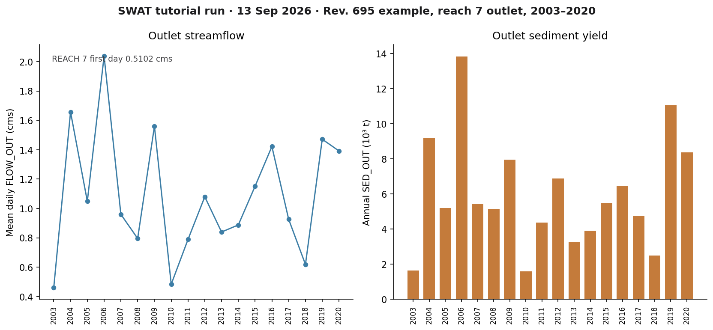
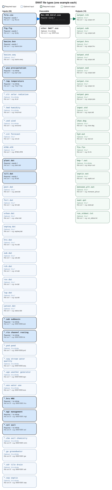

SWAT
A first successful run of classic SWAT2012, revision 695, on Windows. You download the Texas A&M executable, copy the lab’s example TxtInOut folder, run Rev_695_64rel.exe from that folder, and read FLOW_OUT in output.rch. SWAT+ is installed elsewhere on this host; this path is the 2012 engine.
1. What this model does
SWAT is a continuous, daily, watershed-scale water and water-quality model. Land is grouped into HRUs (unique land use, soil, and slope). HRUs drain to subbasins. Subbasins send water, sediment, and nutrients into reaches, and the reaches connect to an outlet. You will open the reach file first.
The lab’s pinned engine is Rev_695_64rel.exe (SWAT2012 Rev. 695, 64-bit, 12 Feb 2025). ArcSWAT, QSWAT, and SWAT Editor can build a new project; they are not required to finish this tutorial.
2. Get the software
Download SWAT2012 rev. 695 from Texas A&M AgriLife. The software page also hosts ArcSWAT, QSWAT, and SWAT Editor. New projects are steered toward SWAT+; keep 2012 when you are repeating an existing TxtInOut tree, which is this lab’s case.
On this host the tree is already at C:\Grok\Models\installs\SWAT. If you are repeating the lab path, you can skip the download and use that folder.
3. The lab install
Classic SWAT is a folder of text files plus one executable. GIS is optional.
| Piece | Where | First-run role |
|---|---|---|
Rev_695_64rel.exe |
installs\SWAT\ and the example folder |
The 2012 engine. Copy it into the TxtInOut folder and run it there. |
file.cio |
example / TxtInOut | Master control. This example is 20 years starting 2001, two warmup years, daily print. |
fig.fig |
same folder | Watershed topology: seven subbasins and the reach routing. |
| HRU and weather files | *.hru, *.mgt, *.sol, pcp1.pcp, Tmp1.Tmp, *.wgn |
Required. Named by file.cio and fig.fig. |
| SWAT+ | installs\SWATplus\ |
A different model. Not this tutorial. |
installs\SWAT\golden holds a prior CLI tree. The verification below used a new working copy of the example inputs, so that golden tree stays untouched. tools\test_all_models.ps1 still runs in place under example; the tutorial wrapper below uses a disposable folder.
4. Novice path: run the seven-subbasin example
The example is a twenty-year continuous run (2001–2020) with two years skipped in the printed output. IPRINT is daily. You will copy the inputs into a fresh folder, drop the executable beside them, and run from that folder.
$src = "C:\Grok\Models\installs\SWAT\example"
$run = "C:\Grok\Models\installs\SWAT\tutorial_run_20260913"
New-Item -ItemType Directory -Force -Path $run | Out-Null
Get-ChildItem $src -File | Where-Object {
$_.Name -notlike "output.*" -and $_.Name -notlike "bmp-*" -and $_.Extension -notin ".out"
} | Copy-Item -Destination $run
Copy-Item "C:\Grok\Models\installs\SWAT\Rev_695_64rel.exe" $run -Force
Set-Location $run
.\Rev_695_64rel.exe
On this host you can instead rerun the lab wrapper, which copies those inputs, executes the engine, asserts the numbers below, and rewrites the figure:
python C:\Grok\Models\tools\run_swat_tutorial_verify.py
Stand in the folder that contains file.cio. The engine does not take a project path on the command line. If you run it from a tools directory, it will not see the example watershed.
5. Confirm the run
The console should end with Execution successfully completed. Then open output.rch. Reach 7 is the outlet.
| Check | Where | This verification (13 Sep 2026) |
|---|---|---|
| Console | run_stdout.txt |
Execution successfully completed (years 1–20) |
output.rch size |
run folder | 33.8 MB (daily print, 18 years × 7 reaches) |
| Outlet first-day FLOW_OUT | REACH 7, day 1 | 0.5102 cms |
| Outlet mean daily flow | REACH 7, 2003–2020 | 1.0875 cms |
| Outlet mean annual sediment | REACH 7 SED_OUT | 5,942 t/yr |
The automated test is test_tutorial_run inside tools\run_swat_tutorial_verify.py. It requires the success phrase, seven reaches, eighteen printed years, and REACH 7 first-day FLOW_OUT equal to 0.5102 cms within 0.0005. The older test_all_models.ps1 SWAT block still looks for a historic 0.2635E+01 token on the first data line of the standing example folder; use the wrapper above when you want a disposable copy of the current inputs.
6. This verification’s figure
The 13 Sep 2026 run wrote eighteen printed years after the two-year skip. Outlet mean daily flow is 1.09 cms; 2006 is the wet peak. Mean annual sediment at reach 7 is 5,942 t/yr, with 2006 the high year on the right-hand panel.

installs\SWAT\tutorial_run_20260913. Left: mean daily FLOW_OUT at reach 7. Right: annual SED_OUT at the same reach.If you rerun the wrapper after deleting output.rch in that folder, SWAT runs again and this PNG is rewritten in the run folder and in each tutorial images\ home.
Model Input and Output
The diagram below is built from the verification folder on this host. Every file name in the picture is a real file from that run. Arrows show what the executable reads and what it writes.

Executable
Rev_695_64rel.exe
This is the SWAT2012 revision 695 engine, 64-bit release build. You start it in the TxtInOut folder. It reads file.cio and writes output.rch in that same folder.
SWAT.exe
This is another SWAT binary sitting in the example folder. The verified tutorial path starts Rev_695_64rel.exe, not this file. Keep the file beside the other inputs for this run.
SWATdebug.exe
This is a debug build of SWAT in the example folder. Do not use it for the first success. The release engine is Rev_695_64rel.exe. Keep the file beside the other inputs for this run.
Input files
000010000.pnd
000010000.pnd belongs to land unit 000010000. It describes ponds or wetlands in that subbasin. If none are used, the file still exists with zeros or off flags.
000010000.rte
000010000.rte belongs to land unit 000010000. It describes the main channel: length, slope, and bank properties used to move water and sediment downstream. Keep the file beside the other inputs for this run.
000010000.sub
000010000.sub belongs to land unit 000010000. It is the subbasin several HRUs drain to. It names area, location, and which reach that subbasin feeds. Keep the file beside the other inputs for this run.
000010000.swq
000010000.swq belongs to land unit 000010000. It holds in-stream nutrient and algae parameters for that subbasin channel. SWAT reads it with the routing file. Keep the file beside the other inputs for this run.
000010000.wgn
000010000.wgn belongs to land unit 000010000. It holds monthly climate statistics for that subbasin. SWAT uses it to fill missing weather or generate climate. Keep the file beside the other inputs for this run.
000010000.wus
000010000.wus belongs to land unit 000010000. It describes irrigation or other withdrawals in that subbasin. Unused demand still leaves a small file SWAT opens. Keep the file beside the other inputs for this run.
000010001.chm
000010001.chm belongs to land unit 000010001. It holds nutrient and carbon starting values for that HRU. SWAT uses it when tracking nitrogen and phosphorus, not only water.
000010001.gw
000010001.gw belongs to land unit 000010001. It sets shallow-aquifer properties for that HRU: how water returns as baseflow and how the water table is represented.
000010001.hru
000010001.hru belongs to land unit 000010001. It describes one mix of land use, soil, and slope: area, overland slope, and the IDs SWAT uses to compute runoff and erosion on that patch of land.
000010001.mgt
000010001.mgt belongs to land unit 000010001. It is the planting, tillage, fertilizer, and harvest calendar for that HRU. Cover and disturbance through the year come from these operations.
000010001.sdr
000010001.sdr belongs to land unit 000010001. It describes subsurface tile drainage for that HRU. If drainage is unused, the file is still present with default or off settings.
000010001.sep
000010001.sep belongs to land unit 000010001. It describes on-site septic wastewater for that HRU. Many rural units leave defaults. SWAT still opens the file. Keep the file beside the other inputs for this run.
000010001.sol
000010001.sol belongs to land unit 000010001. It is the soil profile for that HRU: layer thickness, texture, and related properties that control infiltration and erosion on the land unit.
000010002.chm
000010002.chm belongs to land unit 000010002. It holds nutrient and carbon starting values for that HRU. SWAT uses it when tracking nitrogen and phosphorus, not only water.
000010002.gw
000010002.gw belongs to land unit 000010002. It sets shallow-aquifer properties for that HRU: how water returns as baseflow and how the water table is represented.
000010002.hru
000010002.hru belongs to land unit 000010002. It describes one mix of land use, soil, and slope: area, overland slope, and the IDs SWAT uses to compute runoff and erosion on that patch of land.
000010002.mgt
000010002.mgt belongs to land unit 000010002. It is the planting, tillage, fertilizer, and harvest calendar for that HRU. Cover and disturbance through the year come from these operations.
000010002.sdr
000010002.sdr belongs to land unit 000010002. It describes subsurface tile drainage for that HRU. If drainage is unused, the file is still present with default or off settings.
000010002.sep
000010002.sep belongs to land unit 000010002. It describes on-site septic wastewater for that HRU. Many rural units leave defaults. SWAT still opens the file. Keep the file beside the other inputs for this run.
000010002.sol
000010002.sol belongs to land unit 000010002. It is the soil profile for that HRU: layer thickness, texture, and related properties that control infiltration and erosion on the land unit.
000010003.chm
000010003.chm belongs to land unit 000010003. It holds nutrient and carbon starting values for that HRU. SWAT uses it when tracking nitrogen and phosphorus, not only water.
000010003.gw
000010003.gw belongs to land unit 000010003. It sets shallow-aquifer properties for that HRU: how water returns as baseflow and how the water table is represented.
000010003.hru
000010003.hru belongs to land unit 000010003. It describes one mix of land use, soil, and slope: area, overland slope, and the IDs SWAT uses to compute runoff and erosion on that patch of land.
000010003.mgt
000010003.mgt belongs to land unit 000010003. It is the planting, tillage, fertilizer, and harvest calendar for that HRU. Cover and disturbance through the year come from these operations.
000010003.sdr
000010003.sdr belongs to land unit 000010003. It describes subsurface tile drainage for that HRU. If drainage is unused, the file is still present with default or off settings.
000010003.sep
000010003.sep belongs to land unit 000010003. It describes on-site septic wastewater for that HRU. Many rural units leave defaults. SWAT still opens the file. Keep the file beside the other inputs for this run.
000010003.sol
000010003.sol belongs to land unit 000010003. It is the soil profile for that HRU: layer thickness, texture, and related properties that control infiltration and erosion on the land unit.
000010004.chm
000010004.chm belongs to land unit 000010004. It holds nutrient and carbon starting values for that HRU. SWAT uses it when tracking nitrogen and phosphorus, not only water.
000010004.gw
000010004.gw belongs to land unit 000010004. It sets shallow-aquifer properties for that HRU: how water returns as baseflow and how the water table is represented.
000010004.hru
000010004.hru belongs to land unit 000010004. It describes one mix of land use, soil, and slope: area, overland slope, and the IDs SWAT uses to compute runoff and erosion on that patch of land.
000010004.mgt
000010004.mgt belongs to land unit 000010004. It is the planting, tillage, fertilizer, and harvest calendar for that HRU. Cover and disturbance through the year come from these operations.
000010004.sdr
000010004.sdr belongs to land unit 000010004. It describes subsurface tile drainage for that HRU. If drainage is unused, the file is still present with default or off settings.
000010004.sep
000010004.sep belongs to land unit 000010004. It describes on-site septic wastewater for that HRU. Many rural units leave defaults. SWAT still opens the file. Keep the file beside the other inputs for this run.
000010004.sol
000010004.sol belongs to land unit 000010004. It is the soil profile for that HRU: layer thickness, texture, and related properties that control infiltration and erosion on the land unit.
000010005.chm
000010005.chm belongs to land unit 000010005. It holds nutrient and carbon starting values for that HRU. SWAT uses it when tracking nitrogen and phosphorus, not only water.
000010005.gw
000010005.gw belongs to land unit 000010005. It sets shallow-aquifer properties for that HRU: how water returns as baseflow and how the water table is represented.
000010005.hru
000010005.hru belongs to land unit 000010005. It describes one mix of land use, soil, and slope: area, overland slope, and the IDs SWAT uses to compute runoff and erosion on that patch of land.
000010005.mgt
000010005.mgt belongs to land unit 000010005. It is the planting, tillage, fertilizer, and harvest calendar for that HRU. Cover and disturbance through the year come from these operations.
000010005.sdr
000010005.sdr belongs to land unit 000010005. It describes subsurface tile drainage for that HRU. If drainage is unused, the file is still present with default or off settings.
000010005.sep
000010005.sep belongs to land unit 000010005. It describes on-site septic wastewater for that HRU. Many rural units leave defaults. SWAT still opens the file. Keep the file beside the other inputs for this run.
000010005.sol
000010005.sol belongs to land unit 000010005. It is the soil profile for that HRU: layer thickness, texture, and related properties that control infiltration and erosion on the land unit.
000020000.pnd
000020000.pnd belongs to land unit 000020000. It describes ponds or wetlands in that subbasin. If none are used, the file still exists with zeros or off flags.
000020000.rte
000020000.rte belongs to land unit 000020000. It describes the main channel: length, slope, and bank properties used to move water and sediment downstream. Keep the file beside the other inputs for this run.
000020000.sub
000020000.sub belongs to land unit 000020000. It is the subbasin several HRUs drain to. It names area, location, and which reach that subbasin feeds. Keep the file beside the other inputs for this run.
000020000.swq
000020000.swq belongs to land unit 000020000. It holds in-stream nutrient and algae parameters for that subbasin channel. SWAT reads it with the routing file. Keep the file beside the other inputs for this run.
000020000.wgn
000020000.wgn belongs to land unit 000020000. It holds monthly climate statistics for that subbasin. SWAT uses it to fill missing weather or generate climate. Keep the file beside the other inputs for this run.
000020000.wus
000020000.wus belongs to land unit 000020000. It describes irrigation or other withdrawals in that subbasin. Unused demand still leaves a small file SWAT opens. Keep the file beside the other inputs for this run.
000020001.chm
000020001.chm belongs to land unit 000020001. It holds nutrient and carbon starting values for that HRU. SWAT uses it when tracking nitrogen and phosphorus, not only water.
000020001.gw
000020001.gw belongs to land unit 000020001. It sets shallow-aquifer properties for that HRU: how water returns as baseflow and how the water table is represented.
000020001.hru
000020001.hru belongs to land unit 000020001. It describes one mix of land use, soil, and slope: area, overland slope, and the IDs SWAT uses to compute runoff and erosion on that patch of land.
000020001.mgt
000020001.mgt belongs to land unit 000020001. It is the planting, tillage, fertilizer, and harvest calendar for that HRU. Cover and disturbance through the year come from these operations.
000020001.sdr
000020001.sdr belongs to land unit 000020001. It describes subsurface tile drainage for that HRU. If drainage is unused, the file is still present with default or off settings.
000020001.sep
000020001.sep belongs to land unit 000020001. It describes on-site septic wastewater for that HRU. Many rural units leave defaults. SWAT still opens the file. Keep the file beside the other inputs for this run.
000020001.sol
000020001.sol belongs to land unit 000020001. It is the soil profile for that HRU: layer thickness, texture, and related properties that control infiltration and erosion on the land unit.
000020002.chm
000020002.chm belongs to land unit 000020002. It holds nutrient and carbon starting values for that HRU. SWAT uses it when tracking nitrogen and phosphorus, not only water.
000020002.gw
000020002.gw belongs to land unit 000020002. It sets shallow-aquifer properties for that HRU: how water returns as baseflow and how the water table is represented.
000020002.hru
000020002.hru belongs to land unit 000020002. It describes one mix of land use, soil, and slope: area, overland slope, and the IDs SWAT uses to compute runoff and erosion on that patch of land.
000020002.mgt
000020002.mgt belongs to land unit 000020002. It is the planting, tillage, fertilizer, and harvest calendar for that HRU. Cover and disturbance through the year come from these operations.
000020002.sdr
000020002.sdr belongs to land unit 000020002. It describes subsurface tile drainage for that HRU. If drainage is unused, the file is still present with default or off settings.
000020002.sep
000020002.sep belongs to land unit 000020002. It describes on-site septic wastewater for that HRU. Many rural units leave defaults. SWAT still opens the file. Keep the file beside the other inputs for this run.
000020002.sol
000020002.sol belongs to land unit 000020002. It is the soil profile for that HRU: layer thickness, texture, and related properties that control infiltration and erosion on the land unit.
000020003.chm
000020003.chm belongs to land unit 000020003. It holds nutrient and carbon starting values for that HRU. SWAT uses it when tracking nitrogen and phosphorus, not only water.
000020003.gw
000020003.gw belongs to land unit 000020003. It sets shallow-aquifer properties for that HRU: how water returns as baseflow and how the water table is represented.
000020003.hru
000020003.hru belongs to land unit 000020003. It describes one mix of land use, soil, and slope: area, overland slope, and the IDs SWAT uses to compute runoff and erosion on that patch of land.
000020003.mgt
000020003.mgt belongs to land unit 000020003. It is the planting, tillage, fertilizer, and harvest calendar for that HRU. Cover and disturbance through the year come from these operations.
000020003.sdr
000020003.sdr belongs to land unit 000020003. It describes subsurface tile drainage for that HRU. If drainage is unused, the file is still present with default or off settings.
000020003.sep
000020003.sep belongs to land unit 000020003. It describes on-site septic wastewater for that HRU. Many rural units leave defaults. SWAT still opens the file. Keep the file beside the other inputs for this run.
000020003.sol
000020003.sol belongs to land unit 000020003. It is the soil profile for that HRU: layer thickness, texture, and related properties that control infiltration and erosion on the land unit.
000020004.chm
000020004.chm belongs to land unit 000020004. It holds nutrient and carbon starting values for that HRU. SWAT uses it when tracking nitrogen and phosphorus, not only water.
000020004.gw
000020004.gw belongs to land unit 000020004. It sets shallow-aquifer properties for that HRU: how water returns as baseflow and how the water table is represented.
000020004.hru
000020004.hru belongs to land unit 000020004. It describes one mix of land use, soil, and slope: area, overland slope, and the IDs SWAT uses to compute runoff and erosion on that patch of land.
000020004.mgt
000020004.mgt belongs to land unit 000020004. It is the planting, tillage, fertilizer, and harvest calendar for that HRU. Cover and disturbance through the year come from these operations.
000020004.sdr
000020004.sdr belongs to land unit 000020004. It describes subsurface tile drainage for that HRU. If drainage is unused, the file is still present with default or off settings.
000020004.sep
000020004.sep belongs to land unit 000020004. It describes on-site septic wastewater for that HRU. Many rural units leave defaults. SWAT still opens the file. Keep the file beside the other inputs for this run.
000020004.sol
000020004.sol belongs to land unit 000020004. It is the soil profile for that HRU: layer thickness, texture, and related properties that control infiltration and erosion on the land unit.
000030000.pnd
000030000.pnd belongs to land unit 000030000. It describes ponds or wetlands in that subbasin. If none are used, the file still exists with zeros or off flags.
000030000.rte
000030000.rte belongs to land unit 000030000. It describes the main channel: length, slope, and bank properties used to move water and sediment downstream. Keep the file beside the other inputs for this run.
000030000.sub
000030000.sub belongs to land unit 000030000. It is the subbasin several HRUs drain to. It names area, location, and which reach that subbasin feeds. Keep the file beside the other inputs for this run.
000030000.swq
000030000.swq belongs to land unit 000030000. It holds in-stream nutrient and algae parameters for that subbasin channel. SWAT reads it with the routing file. Keep the file beside the other inputs for this run.
000030000.wgn
000030000.wgn belongs to land unit 000030000. It holds monthly climate statistics for that subbasin. SWAT uses it to fill missing weather or generate climate. Keep the file beside the other inputs for this run.
000030000.wus
000030000.wus belongs to land unit 000030000. It describes irrigation or other withdrawals in that subbasin. Unused demand still leaves a small file SWAT opens. Keep the file beside the other inputs for this run.
000030001.chm
000030001.chm belongs to land unit 000030001. It holds nutrient and carbon starting values for that HRU. SWAT uses it when tracking nitrogen and phosphorus, not only water.
000030001.gw
000030001.gw belongs to land unit 000030001. It sets shallow-aquifer properties for that HRU: how water returns as baseflow and how the water table is represented.
000030001.hru
000030001.hru belongs to land unit 000030001. It describes one mix of land use, soil, and slope: area, overland slope, and the IDs SWAT uses to compute runoff and erosion on that patch of land.
000030001.mgt
000030001.mgt belongs to land unit 000030001. It is the planting, tillage, fertilizer, and harvest calendar for that HRU. Cover and disturbance through the year come from these operations.
000030001.sdr
000030001.sdr belongs to land unit 000030001. It describes subsurface tile drainage for that HRU. If drainage is unused, the file is still present with default or off settings.
000030001.sep
000030001.sep belongs to land unit 000030001. It describes on-site septic wastewater for that HRU. Many rural units leave defaults. SWAT still opens the file. Keep the file beside the other inputs for this run.
000030001.sol
000030001.sol belongs to land unit 000030001. It is the soil profile for that HRU: layer thickness, texture, and related properties that control infiltration and erosion on the land unit.
000030002.chm
000030002.chm belongs to land unit 000030002. It holds nutrient and carbon starting values for that HRU. SWAT uses it when tracking nitrogen and phosphorus, not only water.
000030002.gw
000030002.gw belongs to land unit 000030002. It sets shallow-aquifer properties for that HRU: how water returns as baseflow and how the water table is represented.
000030002.hru
000030002.hru belongs to land unit 000030002. It describes one mix of land use, soil, and slope: area, overland slope, and the IDs SWAT uses to compute runoff and erosion on that patch of land.
000030002.mgt
000030002.mgt belongs to land unit 000030002. It is the planting, tillage, fertilizer, and harvest calendar for that HRU. Cover and disturbance through the year come from these operations.
000030002.sdr
000030002.sdr belongs to land unit 000030002. It describes subsurface tile drainage for that HRU. If drainage is unused, the file is still present with default or off settings.
000030002.sep
000030002.sep belongs to land unit 000030002. It describes on-site septic wastewater for that HRU. Many rural units leave defaults. SWAT still opens the file. Keep the file beside the other inputs for this run.
000030002.sol
000030002.sol belongs to land unit 000030002. It is the soil profile for that HRU: layer thickness, texture, and related properties that control infiltration and erosion on the land unit.
000030003.chm
000030003.chm belongs to land unit 000030003. It holds nutrient and carbon starting values for that HRU. SWAT uses it when tracking nitrogen and phosphorus, not only water.
000030003.gw
000030003.gw belongs to land unit 000030003. It sets shallow-aquifer properties for that HRU: how water returns as baseflow and how the water table is represented.
000030003.hru
000030003.hru belongs to land unit 000030003. It describes one mix of land use, soil, and slope: area, overland slope, and the IDs SWAT uses to compute runoff and erosion on that patch of land.
000030003.mgt
000030003.mgt belongs to land unit 000030003. It is the planting, tillage, fertilizer, and harvest calendar for that HRU. Cover and disturbance through the year come from these operations.
000030003.sdr
000030003.sdr belongs to land unit 000030003. It describes subsurface tile drainage for that HRU. If drainage is unused, the file is still present with default or off settings.
000030003.sep
000030003.sep belongs to land unit 000030003. It describes on-site septic wastewater for that HRU. Many rural units leave defaults. SWAT still opens the file. Keep the file beside the other inputs for this run.
000030003.sol
000030003.sol belongs to land unit 000030003. It is the soil profile for that HRU: layer thickness, texture, and related properties that control infiltration and erosion on the land unit.
000030004.chm
000030004.chm belongs to land unit 000030004. It holds nutrient and carbon starting values for that HRU. SWAT uses it when tracking nitrogen and phosphorus, not only water.
000030004.gw
000030004.gw belongs to land unit 000030004. It sets shallow-aquifer properties for that HRU: how water returns as baseflow and how the water table is represented.
000030004.hru
000030004.hru belongs to land unit 000030004. It describes one mix of land use, soil, and slope: area, overland slope, and the IDs SWAT uses to compute runoff and erosion on that patch of land.
000030004.mgt
000030004.mgt belongs to land unit 000030004. It is the planting, tillage, fertilizer, and harvest calendar for that HRU. Cover and disturbance through the year come from these operations.
000030004.sdr
000030004.sdr belongs to land unit 000030004. It describes subsurface tile drainage for that HRU. If drainage is unused, the file is still present with default or off settings.
000030004.sep
000030004.sep belongs to land unit 000030004. It describes on-site septic wastewater for that HRU. Many rural units leave defaults. SWAT still opens the file. Keep the file beside the other inputs for this run.
000030004.sol
000030004.sol belongs to land unit 000030004. It is the soil profile for that HRU: layer thickness, texture, and related properties that control infiltration and erosion on the land unit.
000040000.pnd
000040000.pnd belongs to land unit 000040000. It describes ponds or wetlands in that subbasin. If none are used, the file still exists with zeros or off flags.
000040000.rte
000040000.rte belongs to land unit 000040000. It describes the main channel: length, slope, and bank properties used to move water and sediment downstream. Keep the file beside the other inputs for this run.
000040000.sub
000040000.sub belongs to land unit 000040000. It is the subbasin several HRUs drain to. It names area, location, and which reach that subbasin feeds. Keep the file beside the other inputs for this run.
000040000.swq
000040000.swq belongs to land unit 000040000. It holds in-stream nutrient and algae parameters for that subbasin channel. SWAT reads it with the routing file. Keep the file beside the other inputs for this run.
000040000.wgn
000040000.wgn belongs to land unit 000040000. It holds monthly climate statistics for that subbasin. SWAT uses it to fill missing weather or generate climate. Keep the file beside the other inputs for this run.
000040000.wus
000040000.wus belongs to land unit 000040000. It describes irrigation or other withdrawals in that subbasin. Unused demand still leaves a small file SWAT opens. Keep the file beside the other inputs for this run.
000040001.chm
000040001.chm belongs to land unit 000040001. It holds nutrient and carbon starting values for that HRU. SWAT uses it when tracking nitrogen and phosphorus, not only water.
000040001.gw
000040001.gw belongs to land unit 000040001. It sets shallow-aquifer properties for that HRU: how water returns as baseflow and how the water table is represented.
000040001.hru
000040001.hru belongs to land unit 000040001. It describes one mix of land use, soil, and slope: area, overland slope, and the IDs SWAT uses to compute runoff and erosion on that patch of land.
000040001.mgt
000040001.mgt belongs to land unit 000040001. It is the planting, tillage, fertilizer, and harvest calendar for that HRU. Cover and disturbance through the year come from these operations.
000040001.sdr
000040001.sdr belongs to land unit 000040001. It describes subsurface tile drainage for that HRU. If drainage is unused, the file is still present with default or off settings.
000040001.sep
000040001.sep belongs to land unit 000040001. It describes on-site septic wastewater for that HRU. Many rural units leave defaults. SWAT still opens the file. Keep the file beside the other inputs for this run.
000040001.sol
000040001.sol belongs to land unit 000040001. It is the soil profile for that HRU: layer thickness, texture, and related properties that control infiltration and erosion on the land unit.
000040002.chm
000040002.chm belongs to land unit 000040002. It holds nutrient and carbon starting values for that HRU. SWAT uses it when tracking nitrogen and phosphorus, not only water.
000040002.gw
000040002.gw belongs to land unit 000040002. It sets shallow-aquifer properties for that HRU: how water returns as baseflow and how the water table is represented.
000040002.hru
000040002.hru belongs to land unit 000040002. It describes one mix of land use, soil, and slope: area, overland slope, and the IDs SWAT uses to compute runoff and erosion on that patch of land.
000040002.mgt
000040002.mgt belongs to land unit 000040002. It is the planting, tillage, fertilizer, and harvest calendar for that HRU. Cover and disturbance through the year come from these operations.
000040002.sdr
000040002.sdr belongs to land unit 000040002. It describes subsurface tile drainage for that HRU. If drainage is unused, the file is still present with default or off settings.
000040002.sep
000040002.sep belongs to land unit 000040002. It describes on-site septic wastewater for that HRU. Many rural units leave defaults. SWAT still opens the file. Keep the file beside the other inputs for this run.
000040002.sol
000040002.sol belongs to land unit 000040002. It is the soil profile for that HRU: layer thickness, texture, and related properties that control infiltration and erosion on the land unit.
000040003.chm
000040003.chm belongs to land unit 000040003. It holds nutrient and carbon starting values for that HRU. SWAT uses it when tracking nitrogen and phosphorus, not only water.
000040003.gw
000040003.gw belongs to land unit 000040003. It sets shallow-aquifer properties for that HRU: how water returns as baseflow and how the water table is represented.
000040003.hru
000040003.hru belongs to land unit 000040003. It describes one mix of land use, soil, and slope: area, overland slope, and the IDs SWAT uses to compute runoff and erosion on that patch of land.
000040003.mgt
000040003.mgt belongs to land unit 000040003. It is the planting, tillage, fertilizer, and harvest calendar for that HRU. Cover and disturbance through the year come from these operations.
000040003.sdr
000040003.sdr belongs to land unit 000040003. It describes subsurface tile drainage for that HRU. If drainage is unused, the file is still present with default or off settings.
000040003.sep
000040003.sep belongs to land unit 000040003. It describes on-site septic wastewater for that HRU. Many rural units leave defaults. SWAT still opens the file. Keep the file beside the other inputs for this run.
000040003.sol
000040003.sol belongs to land unit 000040003. It is the soil profile for that HRU: layer thickness, texture, and related properties that control infiltration and erosion on the land unit.
000040004.chm
000040004.chm belongs to land unit 000040004. It holds nutrient and carbon starting values for that HRU. SWAT uses it when tracking nitrogen and phosphorus, not only water.
000040004.gw
000040004.gw belongs to land unit 000040004. It sets shallow-aquifer properties for that HRU: how water returns as baseflow and how the water table is represented.
000040004.hru
000040004.hru belongs to land unit 000040004. It describes one mix of land use, soil, and slope: area, overland slope, and the IDs SWAT uses to compute runoff and erosion on that patch of land.
000040004.mgt
000040004.mgt belongs to land unit 000040004. It is the planting, tillage, fertilizer, and harvest calendar for that HRU. Cover and disturbance through the year come from these operations.
000040004.sdr
000040004.sdr belongs to land unit 000040004. It describes subsurface tile drainage for that HRU. If drainage is unused, the file is still present with default or off settings.
000040004.sep
000040004.sep belongs to land unit 000040004. It describes on-site septic wastewater for that HRU. Many rural units leave defaults. SWAT still opens the file. Keep the file beside the other inputs for this run.
000040004.sol
000040004.sol belongs to land unit 000040004. It is the soil profile for that HRU: layer thickness, texture, and related properties that control infiltration and erosion on the land unit.
000040005.chm
000040005.chm belongs to land unit 000040005. It holds nutrient and carbon starting values for that HRU. SWAT uses it when tracking nitrogen and phosphorus, not only water.
000040005.gw
000040005.gw belongs to land unit 000040005. It sets shallow-aquifer properties for that HRU: how water returns as baseflow and how the water table is represented.
000040005.hru
000040005.hru belongs to land unit 000040005. It describes one mix of land use, soil, and slope: area, overland slope, and the IDs SWAT uses to compute runoff and erosion on that patch of land.
000040005.mgt
000040005.mgt belongs to land unit 000040005. It is the planting, tillage, fertilizer, and harvest calendar for that HRU. Cover and disturbance through the year come from these operations.
000040005.sdr
000040005.sdr belongs to land unit 000040005. It describes subsurface tile drainage for that HRU. If drainage is unused, the file is still present with default or off settings.
000040005.sep
000040005.sep belongs to land unit 000040005. It describes on-site septic wastewater for that HRU. Many rural units leave defaults. SWAT still opens the file. Keep the file beside the other inputs for this run.
000040005.sol
000040005.sol belongs to land unit 000040005. It is the soil profile for that HRU: layer thickness, texture, and related properties that control infiltration and erosion on the land unit.
000050000.pnd
000050000.pnd belongs to land unit 000050000. It describes ponds or wetlands in that subbasin. If none are used, the file still exists with zeros or off flags.
000050000.rte
000050000.rte belongs to land unit 000050000. It describes the main channel: length, slope, and bank properties used to move water and sediment downstream. Keep the file beside the other inputs for this run.
000050000.sub
000050000.sub belongs to land unit 000050000. It is the subbasin several HRUs drain to. It names area, location, and which reach that subbasin feeds. Keep the file beside the other inputs for this run.
000050000.swq
000050000.swq belongs to land unit 000050000. It holds in-stream nutrient and algae parameters for that subbasin channel. SWAT reads it with the routing file. Keep the file beside the other inputs for this run.
000050000.wgn
000050000.wgn belongs to land unit 000050000. It holds monthly climate statistics for that subbasin. SWAT uses it to fill missing weather or generate climate. Keep the file beside the other inputs for this run.
000050000.wus
000050000.wus belongs to land unit 000050000. It describes irrigation or other withdrawals in that subbasin. Unused demand still leaves a small file SWAT opens. Keep the file beside the other inputs for this run.
000050001.chm
000050001.chm belongs to land unit 000050001. It holds nutrient and carbon starting values for that HRU. SWAT uses it when tracking nitrogen and phosphorus, not only water.
000050001.gw
000050001.gw belongs to land unit 000050001. It sets shallow-aquifer properties for that HRU: how water returns as baseflow and how the water table is represented.
000050001.hru
000050001.hru belongs to land unit 000050001. It describes one mix of land use, soil, and slope: area, overland slope, and the IDs SWAT uses to compute runoff and erosion on that patch of land.
000050001.mgt
000050001.mgt belongs to land unit 000050001. It is the planting, tillage, fertilizer, and harvest calendar for that HRU. Cover and disturbance through the year come from these operations.
000050001.sdr
000050001.sdr belongs to land unit 000050001. It describes subsurface tile drainage for that HRU. If drainage is unused, the file is still present with default or off settings.
000050001.sep
000050001.sep belongs to land unit 000050001. It describes on-site septic wastewater for that HRU. Many rural units leave defaults. SWAT still opens the file. Keep the file beside the other inputs for this run.
000050001.sol
000050001.sol belongs to land unit 000050001. It is the soil profile for that HRU: layer thickness, texture, and related properties that control infiltration and erosion on the land unit.
000050002.chm
000050002.chm belongs to land unit 000050002. It holds nutrient and carbon starting values for that HRU. SWAT uses it when tracking nitrogen and phosphorus, not only water.
000050002.gw
000050002.gw belongs to land unit 000050002. It sets shallow-aquifer properties for that HRU: how water returns as baseflow and how the water table is represented.
000050002.hru
000050002.hru belongs to land unit 000050002. It describes one mix of land use, soil, and slope: area, overland slope, and the IDs SWAT uses to compute runoff and erosion on that patch of land.
000050002.mgt
000050002.mgt belongs to land unit 000050002. It is the planting, tillage, fertilizer, and harvest calendar for that HRU. Cover and disturbance through the year come from these operations.
000050002.sdr
000050002.sdr belongs to land unit 000050002. It describes subsurface tile drainage for that HRU. If drainage is unused, the file is still present with default or off settings.
000050002.sep
000050002.sep belongs to land unit 000050002. It describes on-site septic wastewater for that HRU. Many rural units leave defaults. SWAT still opens the file. Keep the file beside the other inputs for this run.
000050002.sol
000050002.sol belongs to land unit 000050002. It is the soil profile for that HRU: layer thickness, texture, and related properties that control infiltration and erosion on the land unit.
000050003.chm
000050003.chm belongs to land unit 000050003. It holds nutrient and carbon starting values for that HRU. SWAT uses it when tracking nitrogen and phosphorus, not only water.
000050003.gw
000050003.gw belongs to land unit 000050003. It sets shallow-aquifer properties for that HRU: how water returns as baseflow and how the water table is represented.
000050003.hru
000050003.hru belongs to land unit 000050003. It describes one mix of land use, soil, and slope: area, overland slope, and the IDs SWAT uses to compute runoff and erosion on that patch of land.
000050003.mgt
000050003.mgt belongs to land unit 000050003. It is the planting, tillage, fertilizer, and harvest calendar for that HRU. Cover and disturbance through the year come from these operations.
000050003.sdr
000050003.sdr belongs to land unit 000050003. It describes subsurface tile drainage for that HRU. If drainage is unused, the file is still present with default or off settings.
000050003.sep
000050003.sep belongs to land unit 000050003. It describes on-site septic wastewater for that HRU. Many rural units leave defaults. SWAT still opens the file. Keep the file beside the other inputs for this run.
000050003.sol
000050003.sol belongs to land unit 000050003. It is the soil profile for that HRU: layer thickness, texture, and related properties that control infiltration and erosion on the land unit.
000050004.chm
000050004.chm belongs to land unit 000050004. It holds nutrient and carbon starting values for that HRU. SWAT uses it when tracking nitrogen and phosphorus, not only water.
000050004.gw
000050004.gw belongs to land unit 000050004. It sets shallow-aquifer properties for that HRU: how water returns as baseflow and how the water table is represented.
000050004.hru
000050004.hru belongs to land unit 000050004. It describes one mix of land use, soil, and slope: area, overland slope, and the IDs SWAT uses to compute runoff and erosion on that patch of land.
000050004.mgt
000050004.mgt belongs to land unit 000050004. It is the planting, tillage, fertilizer, and harvest calendar for that HRU. Cover and disturbance through the year come from these operations.
000050004.sdr
000050004.sdr belongs to land unit 000050004. It describes subsurface tile drainage for that HRU. If drainage is unused, the file is still present with default or off settings.
000050004.sep
000050004.sep belongs to land unit 000050004. It describes on-site septic wastewater for that HRU. Many rural units leave defaults. SWAT still opens the file. Keep the file beside the other inputs for this run.
000050004.sol
000050004.sol belongs to land unit 000050004. It is the soil profile for that HRU: layer thickness, texture, and related properties that control infiltration and erosion on the land unit.
000050005.chm
000050005.chm belongs to land unit 000050005. It holds nutrient and carbon starting values for that HRU. SWAT uses it when tracking nitrogen and phosphorus, not only water.
000050005.gw
000050005.gw belongs to land unit 000050005. It sets shallow-aquifer properties for that HRU: how water returns as baseflow and how the water table is represented.
000050005.hru
000050005.hru belongs to land unit 000050005. It describes one mix of land use, soil, and slope: area, overland slope, and the IDs SWAT uses to compute runoff and erosion on that patch of land.
000050005.mgt
000050005.mgt belongs to land unit 000050005. It is the planting, tillage, fertilizer, and harvest calendar for that HRU. Cover and disturbance through the year come from these operations.
000050005.sdr
000050005.sdr belongs to land unit 000050005. It describes subsurface tile drainage for that HRU. If drainage is unused, the file is still present with default or off settings.
000050005.sep
000050005.sep belongs to land unit 000050005. It describes on-site septic wastewater for that HRU. Many rural units leave defaults. SWAT still opens the file. Keep the file beside the other inputs for this run.
000050005.sol
000050005.sol belongs to land unit 000050005. It is the soil profile for that HRU: layer thickness, texture, and related properties that control infiltration and erosion on the land unit.
000050006.chm
000050006.chm belongs to land unit 000050006. It holds nutrient and carbon starting values for that HRU. SWAT uses it when tracking nitrogen and phosphorus, not only water.
000050006.gw
000050006.gw belongs to land unit 000050006. It sets shallow-aquifer properties for that HRU: how water returns as baseflow and how the water table is represented.
000050006.hru
000050006.hru belongs to land unit 000050006. It describes one mix of land use, soil, and slope: area, overland slope, and the IDs SWAT uses to compute runoff and erosion on that patch of land.
000050006.mgt
000050006.mgt belongs to land unit 000050006. It is the planting, tillage, fertilizer, and harvest calendar for that HRU. Cover and disturbance through the year come from these operations.
000050006.sdr
000050006.sdr belongs to land unit 000050006. It describes subsurface tile drainage for that HRU. If drainage is unused, the file is still present with default or off settings.
000050006.sep
000050006.sep belongs to land unit 000050006. It describes on-site septic wastewater for that HRU. Many rural units leave defaults. SWAT still opens the file. Keep the file beside the other inputs for this run.
000050006.sol
000050006.sol belongs to land unit 000050006. It is the soil profile for that HRU: layer thickness, texture, and related properties that control infiltration and erosion on the land unit.
000060000.pnd
000060000.pnd belongs to land unit 000060000. It describes ponds or wetlands in that subbasin. If none are used, the file still exists with zeros or off flags.
000060000.rte
000060000.rte belongs to land unit 000060000. It describes the main channel: length, slope, and bank properties used to move water and sediment downstream. Keep the file beside the other inputs for this run.
000060000.sub
000060000.sub belongs to land unit 000060000. It is the subbasin several HRUs drain to. It names area, location, and which reach that subbasin feeds. Keep the file beside the other inputs for this run.
000060000.swq
000060000.swq belongs to land unit 000060000. It holds in-stream nutrient and algae parameters for that subbasin channel. SWAT reads it with the routing file. Keep the file beside the other inputs for this run.
000060000.wgn
000060000.wgn belongs to land unit 000060000. It holds monthly climate statistics for that subbasin. SWAT uses it to fill missing weather or generate climate. Keep the file beside the other inputs for this run.
000060000.wus
000060000.wus belongs to land unit 000060000. It describes irrigation or other withdrawals in that subbasin. Unused demand still leaves a small file SWAT opens. Keep the file beside the other inputs for this run.
000060001.chm
000060001.chm belongs to land unit 000060001. It holds nutrient and carbon starting values for that HRU. SWAT uses it when tracking nitrogen and phosphorus, not only water.
000060001.gw
000060001.gw belongs to land unit 000060001. It sets shallow-aquifer properties for that HRU: how water returns as baseflow and how the water table is represented.
000060001.hru
000060001.hru belongs to land unit 000060001. It describes one mix of land use, soil, and slope: area, overland slope, and the IDs SWAT uses to compute runoff and erosion on that patch of land.
000060001.mgt
000060001.mgt belongs to land unit 000060001. It is the planting, tillage, fertilizer, and harvest calendar for that HRU. Cover and disturbance through the year come from these operations.
000060001.sdr
000060001.sdr belongs to land unit 000060001. It describes subsurface tile drainage for that HRU. If drainage is unused, the file is still present with default or off settings.
000060001.sep
000060001.sep belongs to land unit 000060001. It describes on-site septic wastewater for that HRU. Many rural units leave defaults. SWAT still opens the file. Keep the file beside the other inputs for this run.
000060001.sol
000060001.sol belongs to land unit 000060001. It is the soil profile for that HRU: layer thickness, texture, and related properties that control infiltration and erosion on the land unit.
000060002.chm
000060002.chm belongs to land unit 000060002. It holds nutrient and carbon starting values for that HRU. SWAT uses it when tracking nitrogen and phosphorus, not only water.
000060002.gw
000060002.gw belongs to land unit 000060002. It sets shallow-aquifer properties for that HRU: how water returns as baseflow and how the water table is represented.
000060002.hru
000060002.hru belongs to land unit 000060002. It describes one mix of land use, soil, and slope: area, overland slope, and the IDs SWAT uses to compute runoff and erosion on that patch of land.
000060002.mgt
000060002.mgt belongs to land unit 000060002. It is the planting, tillage, fertilizer, and harvest calendar for that HRU. Cover and disturbance through the year come from these operations.
000060002.sdr
000060002.sdr belongs to land unit 000060002. It describes subsurface tile drainage for that HRU. If drainage is unused, the file is still present with default or off settings.
000060002.sep
000060002.sep belongs to land unit 000060002. It describes on-site septic wastewater for that HRU. Many rural units leave defaults. SWAT still opens the file. Keep the file beside the other inputs for this run.
000060002.sol
000060002.sol belongs to land unit 000060002. It is the soil profile for that HRU: layer thickness, texture, and related properties that control infiltration and erosion on the land unit.
000060003.chm
000060003.chm belongs to land unit 000060003. It holds nutrient and carbon starting values for that HRU. SWAT uses it when tracking nitrogen and phosphorus, not only water.
000060003.gw
000060003.gw belongs to land unit 000060003. It sets shallow-aquifer properties for that HRU: how water returns as baseflow and how the water table is represented.
000060003.hru
000060003.hru belongs to land unit 000060003. It describes one mix of land use, soil, and slope: area, overland slope, and the IDs SWAT uses to compute runoff and erosion on that patch of land.
000060003.mgt
000060003.mgt belongs to land unit 000060003. It is the planting, tillage, fertilizer, and harvest calendar for that HRU. Cover and disturbance through the year come from these operations.
000060003.sdr
000060003.sdr belongs to land unit 000060003. It describes subsurface tile drainage for that HRU. If drainage is unused, the file is still present with default or off settings.
000060003.sep
000060003.sep belongs to land unit 000060003. It describes on-site septic wastewater for that HRU. Many rural units leave defaults. SWAT still opens the file. Keep the file beside the other inputs for this run.
000060003.sol
000060003.sol belongs to land unit 000060003. It is the soil profile for that HRU: layer thickness, texture, and related properties that control infiltration and erosion on the land unit.
000060004.chm
000060004.chm belongs to land unit 000060004. It holds nutrient and carbon starting values for that HRU. SWAT uses it when tracking nitrogen and phosphorus, not only water.
000060004.gw
000060004.gw belongs to land unit 000060004. It sets shallow-aquifer properties for that HRU: how water returns as baseflow and how the water table is represented.
000060004.hru
000060004.hru belongs to land unit 000060004. It describes one mix of land use, soil, and slope: area, overland slope, and the IDs SWAT uses to compute runoff and erosion on that patch of land.
000060004.mgt
000060004.mgt belongs to land unit 000060004. It is the planting, tillage, fertilizer, and harvest calendar for that HRU. Cover and disturbance through the year come from these operations.
000060004.sdr
000060004.sdr belongs to land unit 000060004. It describes subsurface tile drainage for that HRU. If drainage is unused, the file is still present with default or off settings.
000060004.sep
000060004.sep belongs to land unit 000060004. It describes on-site septic wastewater for that HRU. Many rural units leave defaults. SWAT still opens the file. Keep the file beside the other inputs for this run.
000060004.sol
000060004.sol belongs to land unit 000060004. It is the soil profile for that HRU: layer thickness, texture, and related properties that control infiltration and erosion on the land unit.
000060005.chm
000060005.chm belongs to land unit 000060005. It holds nutrient and carbon starting values for that HRU. SWAT uses it when tracking nitrogen and phosphorus, not only water.
000060005.gw
000060005.gw belongs to land unit 000060005. It sets shallow-aquifer properties for that HRU: how water returns as baseflow and how the water table is represented.
000060005.hru
000060005.hru belongs to land unit 000060005. It describes one mix of land use, soil, and slope: area, overland slope, and the IDs SWAT uses to compute runoff and erosion on that patch of land.
000060005.mgt
000060005.mgt belongs to land unit 000060005. It is the planting, tillage, fertilizer, and harvest calendar for that HRU. Cover and disturbance through the year come from these operations.
000060005.sdr
000060005.sdr belongs to land unit 000060005. It describes subsurface tile drainage for that HRU. If drainage is unused, the file is still present with default or off settings.
000060005.sep
000060005.sep belongs to land unit 000060005. It describes on-site septic wastewater for that HRU. Many rural units leave defaults. SWAT still opens the file. Keep the file beside the other inputs for this run.
000060005.sol
000060005.sol belongs to land unit 000060005. It is the soil profile for that HRU: layer thickness, texture, and related properties that control infiltration and erosion on the land unit.
000070000.pnd
000070000.pnd belongs to land unit 000070000. It describes ponds or wetlands in that subbasin. If none are used, the file still exists with zeros or off flags.
000070000.rte
000070000.rte belongs to land unit 000070000. It describes the main channel: length, slope, and bank properties used to move water and sediment downstream. Keep the file beside the other inputs for this run.
000070000.sub
000070000.sub belongs to land unit 000070000. It is the subbasin several HRUs drain to. It names area, location, and which reach that subbasin feeds. Keep the file beside the other inputs for this run.
000070000.swq
000070000.swq belongs to land unit 000070000. It holds in-stream nutrient and algae parameters for that subbasin channel. SWAT reads it with the routing file. Keep the file beside the other inputs for this run.
000070000.wgn
000070000.wgn belongs to land unit 000070000. It holds monthly climate statistics for that subbasin. SWAT uses it to fill missing weather or generate climate. Keep the file beside the other inputs for this run.
000070000.wus
000070000.wus belongs to land unit 000070000. It describes irrigation or other withdrawals in that subbasin. Unused demand still leaves a small file SWAT opens. Keep the file beside the other inputs for this run.
000070001.chm
000070001.chm belongs to land unit 000070001. It holds nutrient and carbon starting values for that HRU. SWAT uses it when tracking nitrogen and phosphorus, not only water.
000070001.gw
000070001.gw belongs to land unit 000070001. It sets shallow-aquifer properties for that HRU: how water returns as baseflow and how the water table is represented.
000070001.hru
000070001.hru belongs to land unit 000070001. It describes one mix of land use, soil, and slope: area, overland slope, and the IDs SWAT uses to compute runoff and erosion on that patch of land.
000070001.mgt
000070001.mgt belongs to land unit 000070001. It is the planting, tillage, fertilizer, and harvest calendar for that HRU. Cover and disturbance through the year come from these operations.
000070001.sdr
000070001.sdr belongs to land unit 000070001. It describes subsurface tile drainage for that HRU. If drainage is unused, the file is still present with default or off settings.
000070001.sep
000070001.sep belongs to land unit 000070001. It describes on-site septic wastewater for that HRU. Many rural units leave defaults. SWAT still opens the file. Keep the file beside the other inputs for this run.
000070001.sol
000070001.sol belongs to land unit 000070001. It is the soil profile for that HRU: layer thickness, texture, and related properties that control infiltration and erosion on the land unit.
000070002.chm
000070002.chm belongs to land unit 000070002. It holds nutrient and carbon starting values for that HRU. SWAT uses it when tracking nitrogen and phosphorus, not only water.
000070002.gw
000070002.gw belongs to land unit 000070002. It sets shallow-aquifer properties for that HRU: how water returns as baseflow and how the water table is represented.
000070002.hru
000070002.hru belongs to land unit 000070002. It describes one mix of land use, soil, and slope: area, overland slope, and the IDs SWAT uses to compute runoff and erosion on that patch of land.
000070002.mgt
000070002.mgt belongs to land unit 000070002. It is the planting, tillage, fertilizer, and harvest calendar for that HRU. Cover and disturbance through the year come from these operations.
000070002.sdr
000070002.sdr belongs to land unit 000070002. It describes subsurface tile drainage for that HRU. If drainage is unused, the file is still present with default or off settings.
000070002.sep
000070002.sep belongs to land unit 000070002. It describes on-site septic wastewater for that HRU. Many rural units leave defaults. SWAT still opens the file. Keep the file beside the other inputs for this run.
000070002.sol
000070002.sol belongs to land unit 000070002. It is the soil profile for that HRU: layer thickness, texture, and related properties that control infiltration and erosion on the land unit.
ATMO.ATM
This is atmospheric deposition of nutrients. SWAT adds those loads when the option is on. Keep the file beside the other inputs for this run.
basins.bsn
This is the basin file: watershed-wide parameters such as runoff method and snow settings that apply to every subbasin. Keep the file beside the other inputs for this run.
basins.wwq
This is watershed water-quality parameters for in-stream processes that are not tied to a single reach file. Keep the file beside the other inputs for this run.
cst.cst
This is forecast-climate input named in file.cio. If forecasting is off, the file can be unused padding that still sits in the folder. Keep the file beside the other inputs for this run.
fert.dat
This is the fertilizer database. Nutrient applications in .mgt files point at these product definitions. Keep the file beside the other inputs for this run.
fig.fig
This is the watershed command file. It lists the order of subbasins and routing commands so SWAT knows how HRUs drain to the outlet. Keep the file beside the other inputs for this run.
file.cio
This is the master control file. It names the weather files, databases, number of years, print switches, and fig.fig. Wrong names here are the usual reason SWAT cannot start.
hmd.hmd
This is daily relative humidity. Evapotranspiration calculations read it. Keep the file beside the other inputs for this run. Keep the file beside the other inputs for this run.
hru.dat
This is an HRU overlay or index table used by some interfaces. The engine still relies on the numbered .hru files for each unit. Keep the file beside the other inputs for this run.
lup.dat
This is land-use update data. If land use does not change during the run, SWAT may ignore the rows. Keep the file beside the other inputs for this run.
pcp1.pcp
This is measured daily precipitation for the gauges listed in file.cio. Without it SWAT cannot compute runoff from rainfall. Keep the file beside the other inputs for this run.
pest.dat
This is the pesticide database. Management files can apply products defined here. Keep the file beside the other inputs for this run. Keep the file beside the other inputs for this run.
plant.dat
This is the plant-growth database. Every crop or land-cover ID in the .mgt files is defined here. Keep the file beside the other inputs for this run.
rch.dat
This is a reach index table. Channel geometry for routing still comes from the numbered .rte files. Keep the file beside the other inputs for this run.
rsv.dat
This is reservoir input. If the example has no reservoir, the file can be a stub. output.rsv is the matching output. Keep the file beside the other inputs for this run.
septwq.dat
This is septic-system water-quality parameters used with the .sep HRU files. Keep the file beside the other inputs for this run. Keep the file beside the other inputs for this run.
slr.slr
This is daily solar radiation. Plant growth and evaporation use it. file.cio names this file. Keep the file beside the other inputs for this run.
sub.dat
This is a subbasin index table used by some interfaces. Numbered .sub files remain the subbasin inputs the engine reads. Keep the file beside the other inputs for this run.
till.dat
This is the tillage database. Operation codes in management files point here for mixing and residue. Keep the file beside the other inputs for this run.
Tmp1.Tmp
This is measured daily maximum and minimum temperature. SWAT uses it with precipitation to drive snow, ET, and plant growth. Keep the file beside the other inputs for this run.
urban.dat
This is urban land-use parameters. Urban HRUs, if any, draw buildup and washoff coefficients from here. Keep the file beside the other inputs for this run.
watout.dat
This names watershed outlet configuration for some print options. The outlet reach in this example is still reach 7 in output.rch. Keep the file beside the other inputs for this run.
wnd.wnd
This is daily wind speed. It affects evaporation and some in-stream processes. Keep the file beside the other inputs for this run. Keep the file beside the other inputs for this run.
Output files
bmp-ri.out
This is BMP (best management practice) output for retention or similar structures. Ignore it on a first hydrology check. Keep the file beside the other inputs for this run.
bmp-sedfil.out
This is BMP sediment-filter output. It is not the watershed sediment total in output.rch. Keep the file beside the other inputs for this run. Keep the file beside the other inputs for this run.
chan.deg
This is channel-degradation output. It is extra geomorphology detail, not the first flow check. Keep the file beside the other inputs for this run. Keep the file beside the other inputs for this run.
fin.fin
This is a finish flag or finalization file SWAT writes at the end of a successful period. Keep the file beside the other inputs for this run.
hyd.out
This is a hydrology debug or extra hydrograph file. Confirm FLOW_OUT in output.rch first. Keep the file beside the other inputs for this run. Keep the file beside the other inputs for this run.
input.std
This is a listing of inputs SWAT echoes at start. Use it to confirm the engine opened file.cio and the databases. Keep the file beside the other inputs for this run.
monsoon_plt.out
This is a special-plot output some builds write. It is not required to confirm the outlet hydrograph. Keep the file beside the other inputs for this run.
output.hru
This is HRU output: one land unit per row. Use it after output.rch when you need which field produced the load. Keep the file beside the other inputs for this run.
output.pes
This is pesticide output. Skip it unless the management files applied pesticides. Keep the file beside the other inputs for this run. Keep the file beside the other inputs for this run.
output.rch
This is the reach output. Each row is a reach and a day or month. FLOW_OUT and sediment columns here are what the tutorial checks at the outlet.
output.rsv
This is reservoir output. If no reservoir is simulated, the file may be empty or header-only. Keep the file beside the other inputs for this run.
output.sed
This is extra sediment output. The main channel sediment for the tutorial is still in output.rch. Keep the file beside the other inputs for this run.
output.std
This is the standard summary listing, including water-balance lines. It is a good second check after output.rch. Keep the file beside the other inputs for this run.
output.sub
This is subbasin output: water and sediment generated on each subbasin before full channel routing detail. Keep the file beside the other inputs for this run.
septic.out
This is septic-system output. Use it only if septic loads matter in the example. Keep the file beside the other inputs for this run. Keep the file beside the other inputs for this run.
swat.qst
This is a SWAT question or session file some interfaces leave behind. It is not a science table. Keep the file beside the other inputs for this run.
run_stdout.txt
This is console text captured when Rev_695_64rel.exe ran. SWAT may print little. Success is the presence of output.rch with the expected years. Keep the file beside the other inputs for this run.
7. After the first success
Once output.rch is written, you can open output.sub and output.hru the same way, or bring the reach file into SWAT Check. Building a new watershed is ArcSWAT or QSWAT plus SWAT Editor; that is a different lesson. This one stops at a verified CLI run of SWAT2012 Rev. 695.